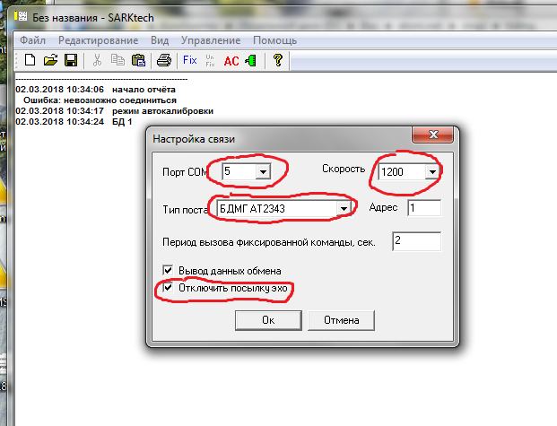
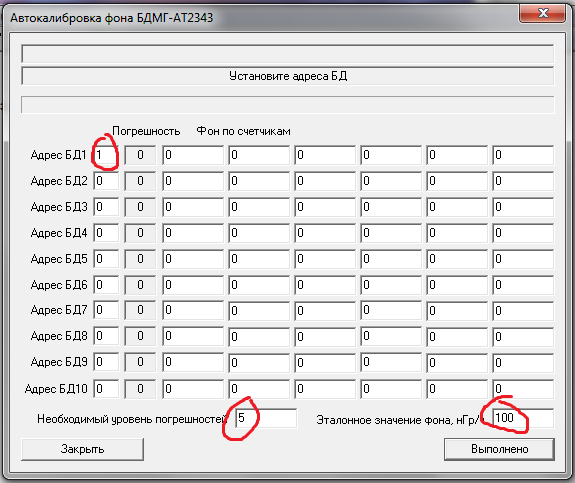
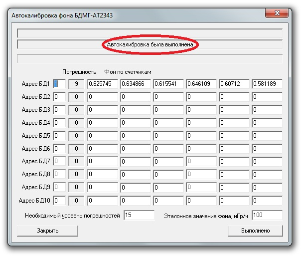

БДМГ-АТ2343. Калибровка фона
- Открыть старый SARKtech
- Выбрать СОМ порт
- Скорость 1200
- Тип поста — БДМГ
- Отключить посылку эха

- Управление → Автокалибровка фона БДМГ-АТ2343 (предпоследний пункт):
- Адрес — 1
- Уровень погрешности — 5
- Фон — 100
- нажать "Выполнено"
- Дождаться, пока появится надпись "Подготовьте фоновые загрузки"
- Ещё раз нажать "Выполнено"

Обязательно дождаться сообщения "Автокалибровка была выполнена"

Автокалибровка фона завершена
Если БДМГ несколько, то, чтобы не терять время, их можно откалибравать все сразу.
Для этого нужно присвоить им разные адреса